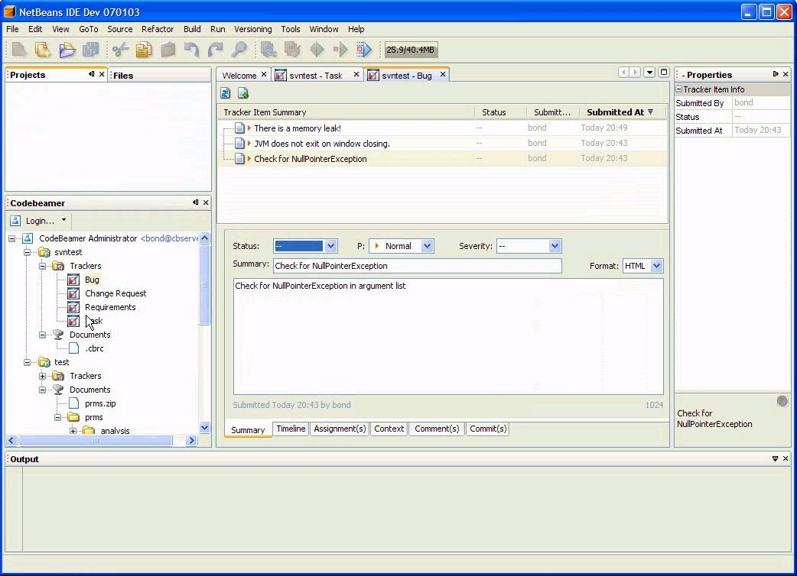
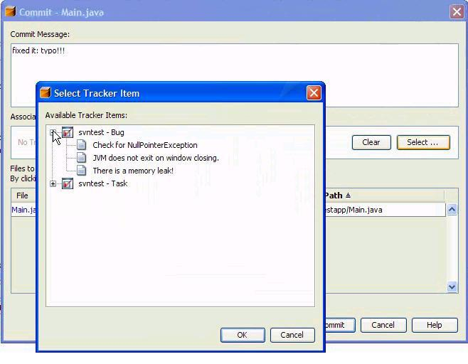

An Introduction to Intland's CodeBeamer Module for NetBeans
Contributed by Derek Walker, devnull
software, inc.
Summary
In seeking a happy medium between managing software projects
effectively and maintaining developer productivity, devnull software
inc. found the right combination in an IDE and a collaborative
development platform. A promising plug-in integrated the two,
subsequently reduced the developer's workload and provided more
detailed and accurate project information. This article gives the
background of why this was necessary, how these tools were selected,
and what benefits were realized from using them.
Introduction
Software development organizations battle daily with the same triad of
fundamental constraints: producing the right software (the right
features with the necessary quality), producing it on time and within
budget. These only get more complicated and difficult to achieve when
other constraints, such as a distributed, virtual organizational
structure, are added. The successful execution of a software
development project may make or break a company; therefore, it should
not only be the concern of the project manager but
the entire team. Not to mention that it is far more enjoyable to be on
a smooth running project than on one that is not.
Team members need to know the "big picture" (that is, the vision of the
product and the problem it solves for its users), the general project
plan and milestones, and what their individual assigned tasks,
deliverables and deadlines are. They also need visibility about how
well they and the rest of the team are doing in meeting these
commitments so corrective measures can be taken if necessary. They
should also meet regularly to ensure that goals are being met and to
address any issues encountered. Project or program managers see no
issue with these tasks—they make up a major part of their jobs;
however, most developers, even the ones who understand the need for
these tasks, find
them uninteresting and burdensome.
Our company, devnull software inc., is no different from other
organizations and must provide this visibility in order to be
successful. Our distributed, virtual organizational structure increases
this burden because our project managers lack direct visibility about
what everyone is doing and our staff works in different time zones;
therefore, more formal communication
and reporting is required. We needed a way to manage projects
effectively while keeping the burden low on our developers, thus
avoiding a decrease in productivity and morale. In fact, the ideal
solution would actually also boost productivity. This required that we
consider how the critical tools needed to achieve these goals would
function and would need to be selected.
Collaborative Development Platforms
In the past, many tools have been used to manage the software
development life-cycle: source code management (SCM) systems, bug and
issue tracking software, build tools, project management systems,
documentation applications and email. The main issue with these tools
was that they were just that—a group of tools. There was no integration
between them, therefore it was difficult to get visibility into the
whole project. This integration was difficult to achieve by a single
organization because of the cost and expertise required to do it.
With the emergence of the web and other collaboration tools (i.e.,
chat)
came a new way to document—the wiki. It soon became the "virtual
handbook" everyone was looking for. It was ideal for developers and
anyone who had no time to document. It required almost no time to learn
to use or enter information. The other powerful feature was the ability
to create hyperlinks to other parts of the wiki. Later, plug-ins
provided much more sophisticated functionality while keeping the same
interface. Collaborative development tools emerged that integrated
the past tools and the newer collaborative tools, like the wiki, into a
platform that would help the management of software projects and
provide greater project visibility.
IDEs have been an integral part of the software development life-cycle
for almost three decades. In the 80s, IDEs were rigid yet still
provided the highest productivity for individuals. In the late 90s, IDE
vendors extended their IDEs with frameworks allowing simple plug-ins
that extended the IDE's functionality beyond its core purpose. But
developers were disconnected
from each other except for simple SCM access. Today's IDE frameworks
allow you to integrate developers into teams through collaboration
services and extend the IDE to become a comprehensive integrated
application life-cycle environment.
Selecting an IDE
Every software development organization is interested in developer
productivity, reducing time-to-market, keeping teams small, and making
developers happy by increasing their sense of accomplishment and making
their day-to-day work life more convenient.
One of the ways, and arguably the easiest way, to achieve this is
through an IDE. It's hardly a secret that developers are happiest when
they are producing code, especially when necessary but tedious tasks
are automated or streamlined. Besides the convenience, an IDE frees up
more time for creative and intellectual work.
devnull software inc. looked at many IDEs, but in the end we came to
the conclusion that NetBeans was the best tool for our needs:
- One tool to address all of our development needs for a 3-tiered
application
- J2EE support
- JSF support
- Web page editor and application builder (i.e., Visual Web Pack)
- Ant support
- SVN support
- Extensibility and customization of the tool via a Java based
framework
Selecting a Collaborative Development Platform
Our requirements for a collaborative development platform were
extensive since we planned to use it as the "operational system" for
the company. In short, it would run our business.
The main objective was to find one tool to serve the role of many tools
and support our entire software development life-cycle in a virtual
environment. It needed to replace core systems like SCM and bug and
issue tracking, as well as ancillary ones such as document management,
reporting, news/announcements and a wiki. We were also looking for it
to initially augment our project management system by making project
plans
and progress reports more visible to the entire team. Not only did
this tool need to be comprehensive but it had to be tightly integrated
as well. We also wanted only one system in order to eliminate
"application thrashing"—the constant switching between applications.
Knowledge and documentation of our projects is critical to our success,
so a very capable and extensible wiki was a necessary requirement. We
expected the wiki to become our main project reporting interface and
performance dashboard as well as provide a platform for traditional
project documentation. Since the wiki was to be
the central tool, we were also looking for all other tools to
tie into it so we could integrate related entities. For example, a task
to implement a feature could have a wiki link to the actual requirement
specification and the usecase it is related to.
Given that we have specific needs and that these will change as our
processes mature, extensibility is extremely important to us. We never
want to be
in a situation where we are unable to perform a necessary task. To be
able to extend the platform, especially the wiki, meant it needed to
run on the right platform—J2EE, the platform of the applications we
develop and our area of expertise. We do not want to
develop or find capabilities in areas that are not core to our main
business. This not only gives us independence but also the ability to
quickly adapt the system as needed. We also expected the platform to be
able to extend through well-documented plug-ins, APIs and web services,
and have an extensive list of pre-built features since we would
not have the time nor the resources to create everything we needed.
As previously mentioned, there was an extensive list of requirements.
Besides the main requirements, here are some of the other important
ones we were looking for:
- Ability to host in-house behind our firewalls
- Easy installation and administration that could be done by our
team
- Wiki requirements: extensive mark-up language and plug-in
library, built-in charting for reports, ability to embed html directly
into wiki pages, the ability to create dynamic data for wiki pages and
to link pages to bugs and tasks
- Extensive email notification capability
- Ability to create and archive email forums and threads
- Easy enough to use and extend by entire team including
documentation and QA
- Automatic continuous builds and build result notification
- Dependable and responsive support
After reviewing a number of commercial and open-source collaborative
development platforms, CodeBeamer from Intland was the only platform
that met our requirements.
CodeBeamer Module for NetBeans
We have always been intrigued by the idea of integrating our
collaboration development platform with our IDE, so we jumped at the
chance to try the CodeBeamer Module for NetBeans, a plug-in for
CodeBeamer. It is a NetBeans module that interfaces a CodeBeamer
instance and allows the remote viewing, creation, modification and
deletion of CodeBeamer "trackers" (requirements, bugs, tasks, change
requests or any custom-defined tracker) and, soon, the same
functionality for documents[1] in CodeBeamer's document management
system. The
interface is a set of panels added to the NetBeans IDE. It enables the
developer to interact with CodeBeamer and its critical information
without leaving the IDE and effectively makes one application out of
two. In addition, the module is open-source so you can look at the
code, customize it or help out in its development. There is a
developer's community with a forum. It was too compelling not to try,
despite being
just a prototype at this time with general availability anticipated
around JavaOne 2007.

Figure 1: Screenshot of the NetBean's
IDE with the
CodeBeamer Module for NetBeans
(Click on image for larger view)
Installation
Installing the module is similiar to installing a typical NetBeans
module. After downloading the module, you install it using the Update
Center. If you do not have a CodeBeamer instance running, Intland
offers a free 15-user version of CodeBeamer that is available on their
web site: www.intland.com.
Features and Benefits of Using the CodeBeamer Module for NetBeans
Once we began using the module, the benefits were immediately apparent.
We created CodeBeamer trackers for requirements, project tasks, bugs
and
information requests. Developers checked their trackers daily to
confirm what they had planned for the day and to make sure no new
critical
bugs had been assigned to them. Later, they could update trackers with
details
about what was accomplished. We found that these same activities could
easily be done through the CodeBeamer Module for NetBeans module while
in the NetBeans IDE. This was very convenient and saved time. It also
helped people maintain focus and flow since it eliminated "application
thrashing".
Bugs are time critical, especially those that bring down customer
production systems or break the build. Dealing with them
quickly is mandatory. The ability to look at the details of a bug while
in the IDE and simultaneously looking at the code significantly helps
in this area. Once reviewed, the developer can update the tracker with
estimated effort and delivery date thereby giving those who are
managing the issue timely information. If the bug is incorrectly
assigned, it can
be re-assigned from the GUI. If during the course of fixing the bug (or
at
anytime developing code), a bug is found, a new bug tracker can be
created without leaving your work and the IDE. When available[1],
accessing the documents from the NetBeans IDE that are related to a
feature, i.e., requirements or standards, will be another productivity
boost and will eliminate the issue of trying to find documents and
making sure they are up-to-date.
CodeBeamer has a wonderful continuous build facility, but because
devnull software is a virtual organization it is easy to have a broken
build that continues
to stay in that state for a significant amount of time either because
of time differences or the challenges in communication. To mitigate
that risk, we have created, as part of the build, a program that parses
the build results and will automatically create a bug tracker of the
highest priority and criticality for the issue and assign it to the
developer who is in charge of the failed module. It will then show up
in their tracker list.
The CodeBeamer Module for NetBeans also reduces the developer's load in
providing project related information. Items like estimated hours,
actual hours, resolution and comments for any tracker can be updated
without leaving the IDE. Updating the status of any tracker only takes
a couple of minutes to provide timely and detailed information. These
capabilities provide extremely valuable and timely information to the
project manager looking after the project.
The most powerful feature of this module is the interaction between
source code management system and the tracker system. When you commit
code to your SCM (for example, subversion) from within the NetBeans
IDE, you are presented with a window that not only enables you to
create a comment for the code to be checked in but that also allows you
to associate a tracker (for example, a bug or task) to that submission.
The tracker is selected from a tree of all of the available trackers
for a project.

Figure 2: Screenshot of CodeBeamer
Module for NetBeans Commit Window
Once this association is made, it enables anyone looking at the tracker
in the NetBeans IDE to double click on the commit link, and the file
associated with that commit will be opened up in the main plane of the
IDE positioned at the starting line of the commit.
Conclusion
The benefits of this integration are easy to see. The real question is:
where can it lead to? Perhaps, extending the module to allow for the
viewing and creation of wiki pages or reports, or exposing the project
dashboards? With the open-source nature of the module, you can help
shape its direction or create your own version
for your specific needs. The forum is waiting for input and the
community is waiting for new members: https://codebeamer.com/cb/proj/wiki/displayHomePage.do?proj_id=346.
Footnotes
1. Through the community support offered for the project, this
functionality is anticipated to be ready by JavaOne.
(May
2007)
{kind=link}